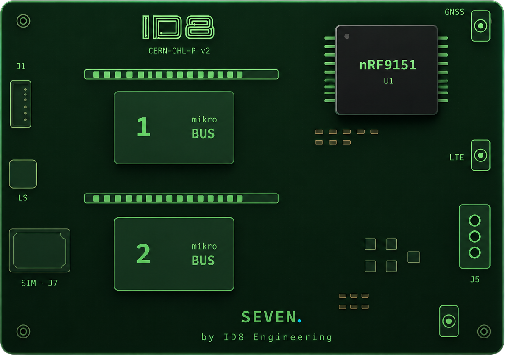

by ID8 Engineering
A compact, open-source rapid-prototyping platform for LTE cellular IoT — built on the Nordic nRF9151 SiP, powered by Zephyr RTOS, and designed to get your idea connected fast.
nRF9151 · 256 KB · LTE-M / NB-IoT · mikroBUS™ · CERN-OHL-P

Hardware
Every design decision in Seven is made with one goal: get your application running with as little friction as possible.
| SoC | Nordic nRF9151 — Cortex-M33 @ 64 MHz, 256 KB RAM, 1 MB flash |
| Cellular | LTE-M / NB-IoT with integrated GNSS |
| Power | 6–36 V DC (barrel + screw terminal) |
| Expansion | 2× mikroBUS™ sockets (1,000+ Click Boards) |
| Interfaces | USB-C, SWD debug, SMA antenna, GPIO headers |
Software
Seven runs on the Nordic nRF Connect SDK — a production-grade, well-documented stack built on top of Zephyr RTOS. Cellular, cloud, OTA — all handled.
Nordic's nRF Connect SDK is built on the Zephyr Project — a Linux Foundation open-source RTOS with a rich set of networking, storage, and peripheral drivers. Configured via device tree.
The nRF9151 modem exposes a standard AT command interface via UART, fully abstracted by the nRF Connect SDK modem library. LTE-M and NB-IoT band configuration, PSM, eDRX — all handled.
Publish telemetry, subscribe to commands, and manage device state through AWS IoT Core. Pre-validated with the nRF9151 using MQTT over TLS 1.2 with X.509 mutual authentication.
Firmware-over-the-air (FOTA) updates are built into the nRF Connect SDK. Push new firmware from AWS IoT Jobs or nRF Cloud — devices update securely without physical access.
The nRF9151 includes an integrated GNSS receiver. Acquire a GPS fix without additional hardware. Use A-GPS with nRF Cloud for faster time-to-first-fix, even in challenging conditions.
The Cortex-M33 includes ARM TrustZone technology. nRF9151 adds a hardware-backed key storage and a modem-side TLS stack — credentials never leave the secure enclave in plaintext.
Get Started
The quickest path to your first LTE-connected prototype using the nRF Connect SDK and Zephyr.
Install the nRF Connect SDK using the nRF Connect for Desktop toolchain manager. Installs Zephyr, west, and all required toolchains.
The Seven board definition and DTS files live in the hardware repository. Clone it and point your west workspace at the out-of-tree board definition.
Build the included asset_tracker sample or start from a minimal hello_nrf9151 application.
Flash via USB-C with the nRF Connect Programmer.
Open Source
Seven is fully open: hardware files and software are published under permissive licenses that allow commercial use without restrictions.
All schematics, PCB layout files, Bill of Materials, and mechanical drawings are released under the
CERN Open Hardware Licence v2 — Permissive (CERN-OHL-P v2).
You may freely use, copy, modify, and distribute the hardware design, including in commercial products.
Attribution to the original source is required, but you are not obligated to share modifications
under the same license.
All Seven firmware samples, board support packages, and software tooling are released under the
Apache License, Version 2.0.
You may use the software in proprietary applications, distribute it, modify it, and sublicense it.
The Apache 2.0 license also provides an express patent grant from all contributors.